01
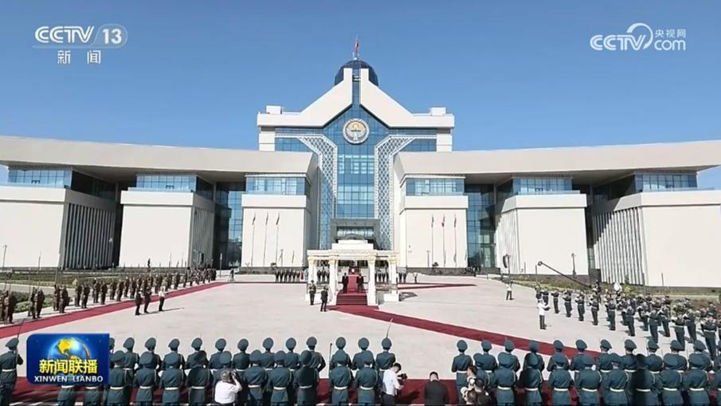
习近平出席吉尔吉斯斯坦总统举行的欢迎仪式
比什凯克秋高气爽。习近平和夫人彭丽媛乘车抵达和谐宫时，扎帕罗夫和夫人扎帕罗娃热情迎接。


比什凯克秋高气爽。习近平和夫人彭丽媛乘车抵达和谐宫时，扎帕罗夫和夫人扎帕罗娃热情迎接。
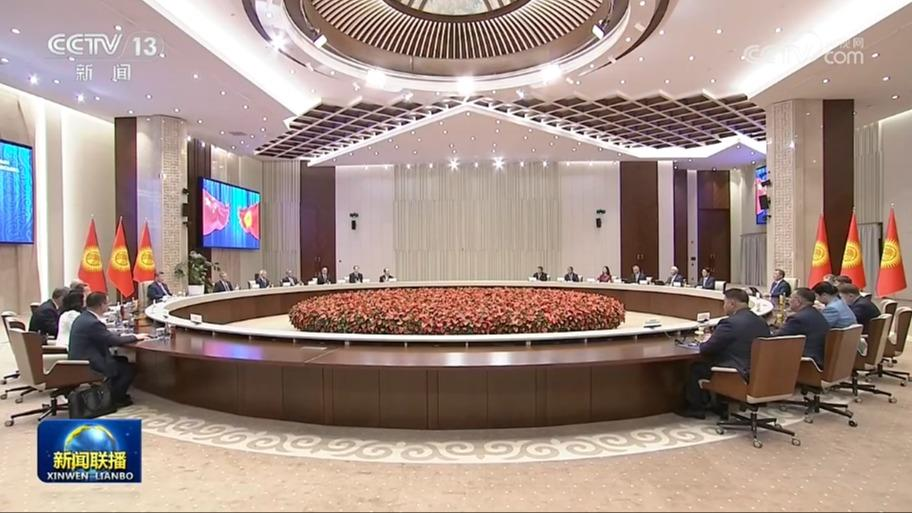
当地时间8月31日上午，吉尔吉斯斯坦总统扎帕罗夫同中国国家主席习近平在比什凯克和谐宫举行会谈。
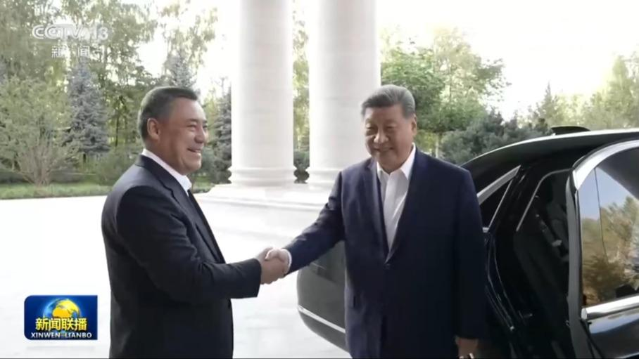
当地时间8月30日晚，国家主席习近平和夫人彭丽媛应邀同吉尔吉斯斯坦总统扎帕罗夫和夫人扎帕罗娃在总统官邸共进晚餐，在亲切友好的气氛中进行了交流。
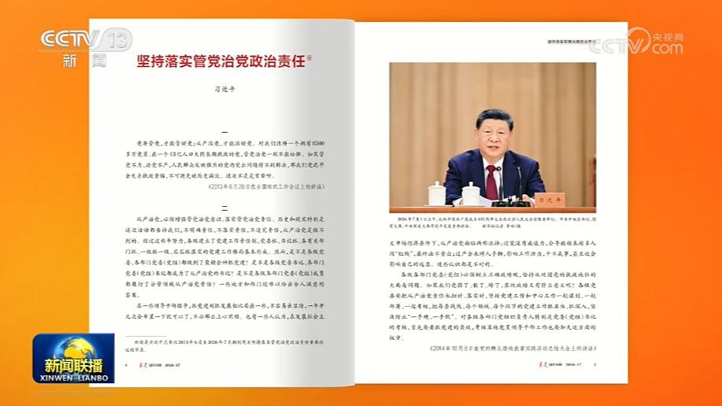
9月1日出版的第17期《求是》杂志将发表中共中央总书记、国家主席、中央军委主席习近平的重要文章《坚持落实管党治党政治责任》。这是习近平总书记2013年6月至2026年7月期间有关重要论述的节录。
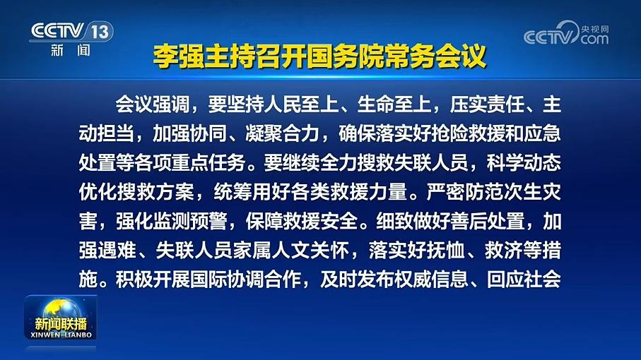
国务院总理李强8月31日主持召开国务院常务会议，学习贯彻习近平总书记在中央政治局会议研究部署西藏日喀则市吉隆县泥石流灾害抢险救援工作时的重要讲话精神。
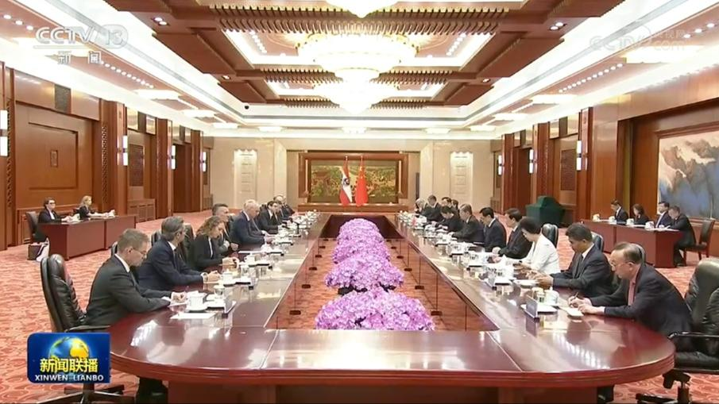
全国人大常委会委员长赵乐际31日在北京人民大会堂同奥地利国民议会议长罗森克兰茨举行会谈。
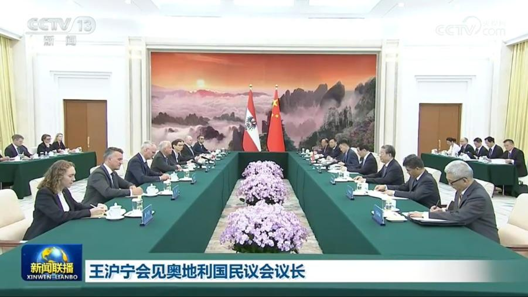
全国政协主席王沪宁31日在京会见奥地利国民议会议长罗森克兰茨。王沪宁表示，2018年，习近平主席同访华的范德贝伦总统共同确立中奥友好战略伙伴关系，开启两国关系新篇章。双方要以建交55周年为契机，落实两国领导人重要共识，密切高层交往，巩固政治互信，深化务实合作，加强人文交流，更好造福两国人民。中国全国政协愿同奥方加强友好交往，为深化中奥关系添砖加瓦。
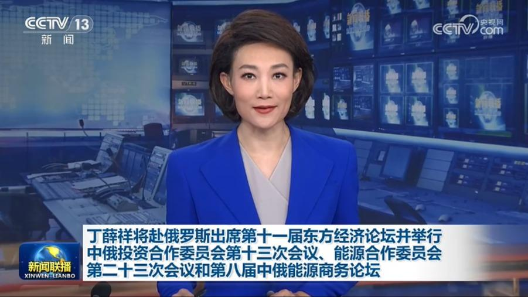
应俄罗斯联邦政府邀请，中共中央政治局常委、国务院副总理丁薛祥将于9月2日至4日赴俄罗斯出席第十一届东方经济论坛，并举行中俄投资合作委员会第十三次会议、能源合作委员会第二十三次会议和第八届中俄能源商务论坛。
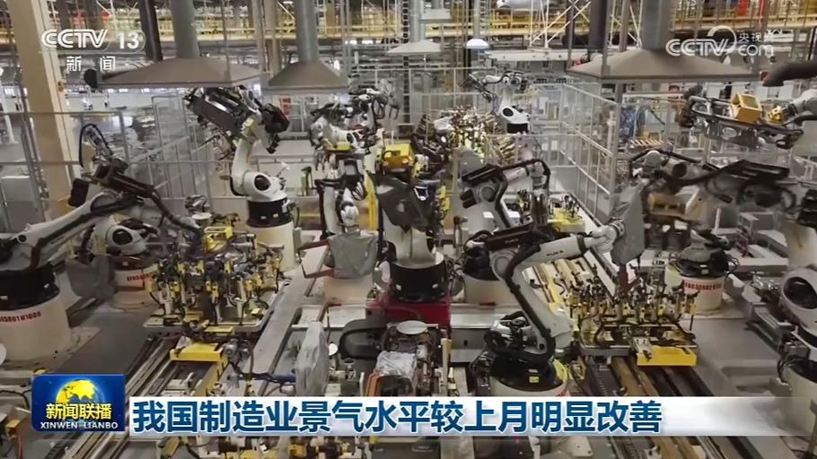
国家统计局、中国物流与采购联合会今天（8月31日）公布，8月份中国制造业采购经理指数为49.8%，较上月上升0.6个百分点。在调查的21个行业中，有16个行业采购经理指数较上月上升。8月份，制造业产需两端同步扩张，生产指数和新订单指数均重回扩张区间，结构优化升级态势明显。装备制造业和高技术制造业采购经理指数分别为51.4%和52.9%，相关行业保持较快增长，对宏观经济增长的支撑引领作用不断增强。
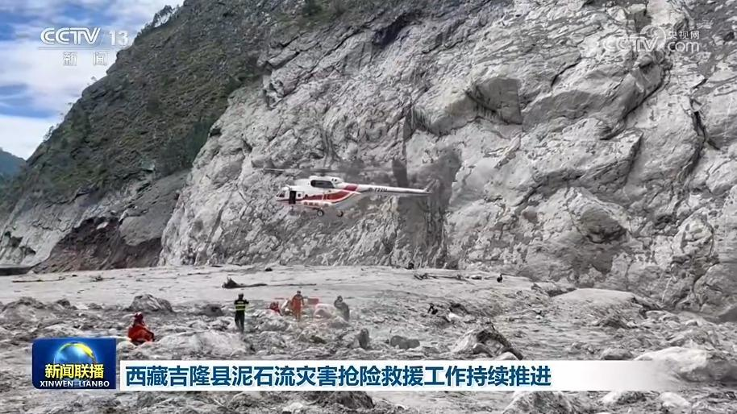
西藏日喀则市吉隆县泥石流灾害抢险救援工作持续推进。在吉隆口岸受灾核心区域，搜救工作不间断展开。今天（8月31日），高原型应急救援直升机分批次将包括消防救援、公安干警、卫生防疫等专业救援力量和设备物资投运到口岸区域，开展深度搜索。
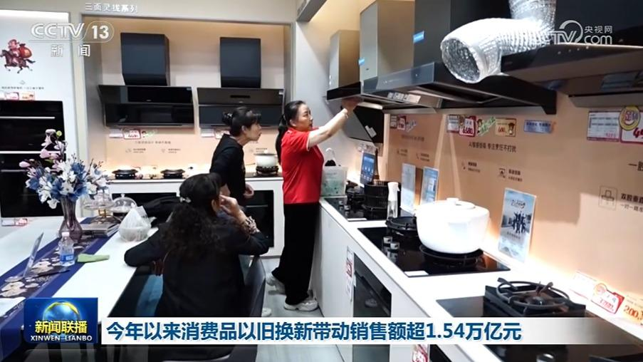
记者从商务部了解到，截至8月30日，2026年消费品以旧换新累计带动相关商品销售超1.54万亿元，惠及超2.06亿人次。全国27个地方开展自主品类补贴政策，带动相关商品销售228.6万件。
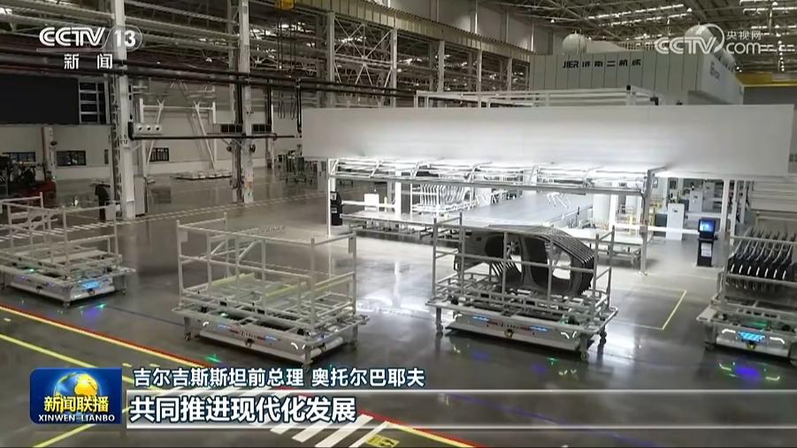
吉尔吉斯斯坦各界人士高度评价习近平主席此次国事访问，表示两国元首就推动构建中吉命运共同体达成重要共识，开启双边关系新篇章。多国人士期待习近平主席出席上海合作组织峰会，同各方一道推动上合组织高质量发展。
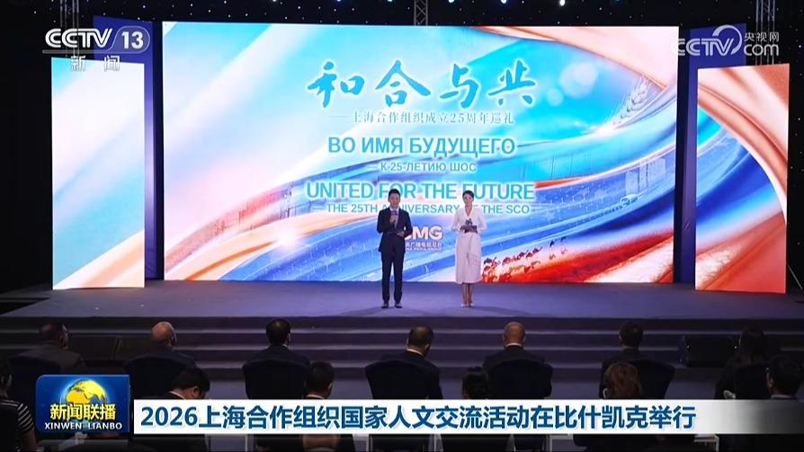
在中国国家主席习近平出席2026年上海合作组织峰会并对吉尔吉斯斯坦进行国事访问之际，当地时间8月30日，中国中央广播电视总台与吉尔吉斯斯坦国家电视广播公司联合主办的2026上海合作组织国家人文交流活动在比什凯克举行。
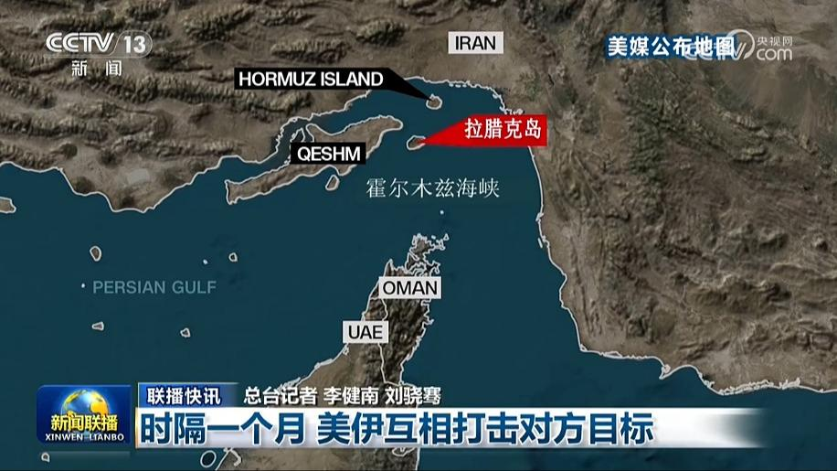
时隔一个月 美伊互相打击对方目标